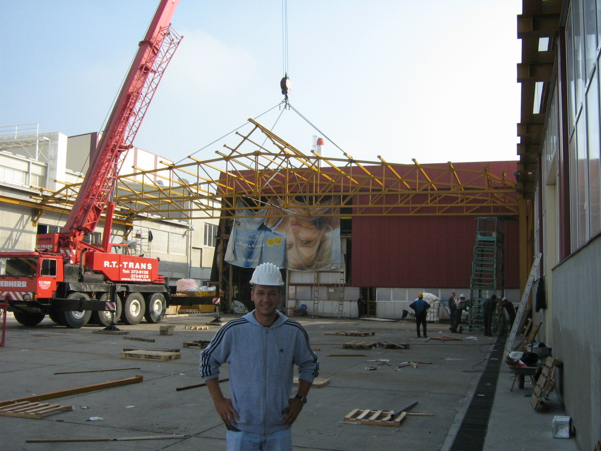

Ovo smo mi
Kompanija Steel plus je osnovana 1993. godine.
Kompaniju je osnovala grupa iskusnih i renomiranih inženjera, a akcenat je bio na kvalitetu projekata i izvedenih radova. Taj princip i prioritet kompanije zadržan je i do današnjeg dana. Delatnost firme od početka je bila projektovanje i izvođenje radova u domenu industrije i čeličnih konstrukcija.
Prepoznatljivi smo u oblasti specijalnih čeličnih konstrukcija, površinskih nosača, silosa, bunkera, kranskih staza, mostova transportera, visokih antenskih stubova, kao i u sanaciji i rekonstrukciji havarisanih objekata i konstrukcija. Najveći broj naših klijenata su kompanije, institucije i ljudi sa kojima sarađujemo godinama, čak i decenijama. Ponosni smo na to jer su baš oni najbolji pokazatelj da je kvalitet i stručnost na kojima insistiramo prepoznat i da je postao naš zaštitni znak.
Gde i šta radimo?
ARHITEKTURA
idejni projekti, projekti za građevinsku dozvolu, projekti za izvođenje
INŽENJERING
vođenje projekta, studija izvodljivosti gradnje, izbor građevinskih izvođača, gradnja ključ u ruke
LEGALIZACIJA OBJEKATA
PROJEKTOVANJE
organizacija projektovanja, glavna dokumentacija , projekat za građevinsku dozvolu, projekat za gradnju
PZI, PROJEKT ZA IZVOĐENJE
projektna dokumentacija, nacrt građevinskih konstrukcija, nacrt mašinskih instalacija
STATIKA
proračun statike, plan oplate, plan armature, statika konstrukcije, proračun betonske ploče, proračun za rušenje nosećeg zida, proračun za nosač, proračun statike
BRAVARIJA, BRAVARSKE USLUGE
obrada metala, čelične konstrukcije, čelične potkonstrukcije, nadstrešnice, stepeništa ograde
METALNE KONSTRUKCIJE
hale sa čeličnim konstrukcijama, međuspratne konstrukcije, čelične potkonstrukcije za spuštene plafone i pregradne zidove, potkonstrukcije za ojačavanje postojećih betonskih konstrukcija, stepeništa, krovne i fasadne potkonstrukcije, ograde
METALNE NASTREŠNICE, METALNE OGRADE
Radove izvodimo i u regijama: Beograd , Grad Beograd. Za više detalja nas kontaktirajte.